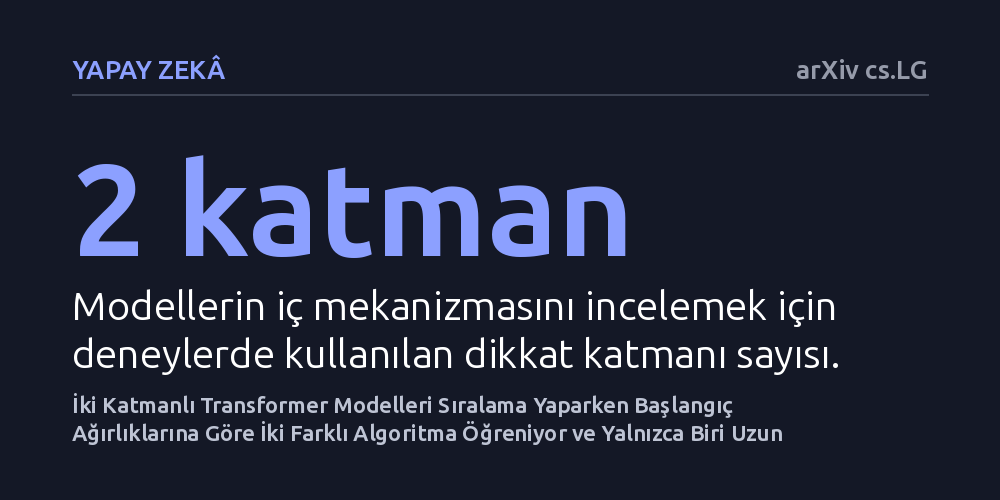

YAPAY-ZEKA · arXiv cs.LG · 2026-10-22
Araştırmacılar, iki katmanlı transformer modellerinin dizileri sıralamayı nasıl öğrendiğini ve modellerin neden bazen daha uzun dizilerde tıkandığını inceledi. Ağırlık başlangıcına bağlı olarak iki farklı çözümden birinin öğrenildiği ve yalnızca her iki dikkat katmanını özelleştiren çözümün daha uzun dizilere genellenebildiği bulundu.
Büyük dil modellerinin eğitim verisinde görmediği daha uzun girdileri anlayabilme yeteneğinin, sadece veri miktarına değil, modelin başlangıç ağırlıklarıyla tetiklenen içsel algoritma seçimine bağlı olduğunu gösterir.

Günümüzün en popüler yapay zeka mimarisi olan transformer tabanlı modeller, metin üretmekten karmaşık mantık yürütmeye kadar pek çok alanda kullanılıyor. Ancak bu modellerin en bilinen zayıflıklarından biri, eğitim sırasında gördükleri girdi uzunluğundan daha uzun dizilerle karşılaştıklarında bocalama eğilimi göstermeleridir. Bir modelin belirli bir uzunlukta öğrendiği mantığı daha uzun dizilere taşıyabilmesi, yapay zekanın ezberlemek yerine kuralları gerçekten kavrayıp kavramadığını anlamak açısından temel bir sınavdır.
Araştırmacılar bu sorunu incelemek için temel bir problem seçti: sayı dizilerini sıralama görevi. Sıralama işlemi kuralları kesin olan matematiksel bir problemdir ve modelin her bir öğeyi diğeriyle doğru kıyaslamasını gerektirir. Eğer bir model kısa dizileri kusursuz sıralayabiliyorsa, aynı mantığı daha uzun dizilere de uygulayabilmelidir; ancak pratikte modellerin çoğu girdi uzadıkça hızla hata yapmaya başlar.
Çalışmada araştırmacılar, mekanizmasını adım adım takip edebilmek amacıyla iki dikkat (attention) katmanına sahip transformer modelleri kurdu. Bu modeller, sabit uzunluktaki sayı dizilerini neredeyse sıfır hatayla sıralayacak şekilde eğitildi. Eğitimin ardından araştırmacılar, modellerin iç ağırlıklarını ve karar adımlarını doğrudan inceleyerek girdileri nasıl işlediklerini haritalandırdı.
Deneyin kilit noktası, modellerin eğitimine başlanırken verilen rastgele ağırlık değerlerinin (başlangıç ağırlıklarının) sonuç üzerindeki etkisini ölçmekti. Araştırmacılar ayrıca sıralama görevine ek olarak, dizideki en küçük elemanı bulma görevini de test ederek farklı problemlerin modelin katman yapısını nasıl etkilediğini karşılaştırdı.
Elde edilen bulgular, modellerin başlangıç ağırlıklarına bağlı olarak birbirinden tamamen farklı iki algoritma sınıfından birine yöneldiğini ortaya koydu. İlk çözüm sınıfında model, sıralama yaparken ikinci dikkat katmanını neredeyse hiç kullanmıyor ve tüm yükü tek bir katmana yüklüyordu. Bu modeller eğitim uzunluğunda kusursuz sonuç verse de, daha uzun diziler verildiğinde tamamen başarısız oldu.
İkinci çözüm sınıfında ise model, her iki dikkat katmanını birbiriyle eşgüdümlü çalışacak şekilde özelleştirdi. İlk katman bağlamsal bilgileri toplayarak arama uzayını daraltıyor, ikinci katman ise bu filtrelenmiş bilgiyi kullanarak sıralamayı tamamlıyordu. Bu iki katmanlı stratejiyi öğrenen modeller, yalnızca sabit bir uzunlukta eğitilmiş olmalarına rağmen, çok daha uzun dizileri hiç hata yapmadan sıralamayı başardı. Araştırmacılar, ağırlıkların başlangıç değerlerini bilinçli seçerek modeli istedikleri çözüme yönlendirebileceklerini de gösterdi.
Uzunluk genellemesindeki bu farkın kökeninde, kısa dizilerde çok nadir görülen ancak dizi uzadıkça sıklaşan özel girdi türleri yatıyor. İki katmanı da uzmanlaşan modeller bu nadir durumları başarıyla çözerken, tek katmanla kestirmeden giden modeller uzun dizilerde sıklaşan bu durumlar karşısında çöktü. Ancak durum her görev için aynı işlemiyor: araştırmacılar dizideki en küçük sayıyı bulma görevini incelediklerinde tam tersi bir tabloyla karşılaştı.
En küçük sayıyı bulma probleminde, iki katmanlı uzmanlaşma çözümü daha uzun dizilerde tek katmanlı çözüme kıyasla daha kötü sonuç verdi. Bu zıtlık, yapay zekada daha fazla katman kullanmanın her zaman daha iyi genelleme getireceği yönündeki yaygın kabulü sarsıyor; bir görevin yapısına ve modelin öğrendiği iç algoritmaya bağlı olarak katman uzmanlaşmasının avantaja veya dezavantaja dönüşebileceğini kanıtlıyor.